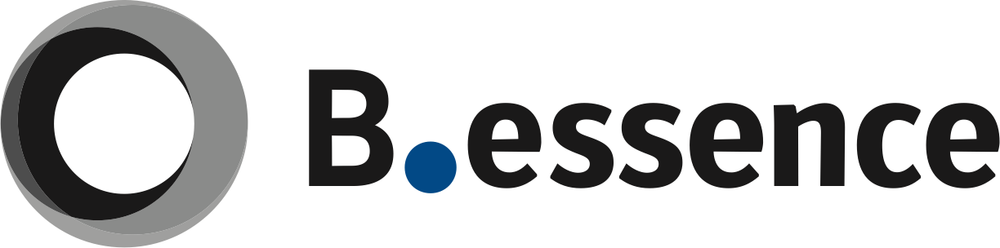
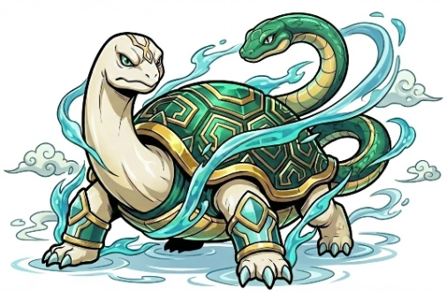

READING 01
診断結果の読み解き
御社の診断結果は、こうでした。
御社の四神構成
- 武玄武構造の力利き神40%
- 雀朱雀共創の力30%
- 虎白虎成果の力18%
- 龍青龍革新の力影神12%
玄武は、理と秩序を重んじ、仕組みと再現性で組織を支えようとする力です。青龍は、まだ存在しない未来を直感し、動きながら形にしていく、変化と越境と突破の力です。
ここからは、この2つの力が御社の組織のどこで噛み合い、どこで詰まるのかを、読み解いていきます。
READING 02
玄武型組織が
ぶつかる壁
玄武は、御社をここまで伸ばしてきた力です。
- 誰がやっても同じか
- 仕組みで動くか
- 整っているか
- 崩れず続くか
- 再現できるか
崩れない仕組みに賭ける。
だから、会社は安定して回ってきました。
その一方で、玄武が強く出すぎると、整えることを優先するほど、動き出しが遅れ、変化に乗り遅れていきます。
玄武が強い会社で、起きていること
- 前例のないことは、後回しになる
- 整えること自体が、目的になっている
- 完璧を待って、動き出せない
- 気づけば、事業が古びている
問題は、仕組みを整えることではありません。
整えることが目的になり、変化を止めてしまうことです。
CASE 03｜事業
完成度は上がる。
でも、次の波に
乗り遅れる。
- 既存の仕組みを、磨き続ける
- 完成度は着実に上がる
- でも、新しい領域には出ていかない
- 前例のない挑戦を、リスクとして避ける
- 世の中が変わっても、既存を守る
- 気づけば、新しい流れに乗り遅れる
青龍は、積み上げた仕組みを壊す存在ではありません。
- 整えた土台の外へ、踏み出す
- 新しい領域に、まず種をまく
- 前例のない市場を、切り開く
- 変化の波を、こちらから起こす
- 既存の強みを、次の場所に持ち込む
- 守りの堅さに、攻めの一手を足す
守り続けるだけでは、時代に置いていかれる。
玄武は崩れない土台をつくる。
青龍は、その土台で次へ挑む。
この2つが噛み合うと、“整うけど古びる”が“整えて進化し続ける”に変わる。
事業だけではありません。発想でも、同じことが起きます。
CASE 04｜発想
改善は得意。
でも、変革が起きない。
- 今あるものを、少しずつ良くする
- 大きく変える発想が、出てこない
- 「今のやり方」を前提に考える
- 破壊的なアイデアは、否定される
- 改善の先に、頭打ちが来る
- 連続の改善では、非連続に勝てない
- 前提そのものを、問い直す
- 非連続な一手を、仕掛ける
- 新しいモデルを、ゼロから描く
- 変化を、脅威でなく機会にする
今を改善する
だけでなく、
次を創り出す
青龍で「変革の一手」は生まれます。でも、その新領域で勝ち切るには、もう一つ、白虎の力が必要です。
- 新しい領域で、どこで勝つかを絞る
- 挑戦を、成果につなげる
- 勝てる形に育てる
玄武だけなら、改善の先で頭打ち。
青龍が入れば次を創り、白虎が入れば、その新領域で勝てる。
事業でも、発想でも、
同じことが起きていました。
READING 05
挑戦は増やしたい。
でも、経営資源は
絞らなければならない。
人の可能性は信じたい。
でも、役割と成果基準は
明確にしなければならない。
どちらも正しい。だから、選べない。
組織には、
必ず矛盾があります。
そして多くの会社は、
どちらかを選び、もう片方を失います。
片方を強めると、もう片方が崩れる。
片方を強めると、もう片方が崩れる
強い会社は、矛盾をなくした
会社ではありません。
それを、力に変えた会社です。
矛盾が、力になる。
四神経営とは、
組織の矛盾を統合する
経営です。
READING 06
組織が強くなるのは、
4つの力が
噛み合ったときです。
 青龍まだない未来を、
青龍まだない未来を、生み出す
 朱雀構想を共有し、
朱雀構想を共有し、人を巻き込む
 白虎勝ち筋を見極め、
白虎勝ち筋を見極め、成果にする

玄武成果を再現できる仕組みにする
社長一人が描くだけでは、会社は変わりません。
4つの力がそろって初めて──四神経営では、この状態を「完全組織」と呼びます。
NEXT
ここから先は、
会社ごとに
答えが違います。
ここまでで、御社の現在地は見えました。このページで持ち帰れるのは、玄武の強み（安定・再現性）を生かしながら、青龍の「新しい可能性を試す」力を取り入れ、安定した基盤の上で、新しい領域への挑戦を始めるという見方です。
ただ、組織は診断しただけでは変わりません。次に必要なのは、この見方を御社の答えに落とし込むこと──たとえば、こうした問いに答えていくことです。
- どの事業の外側に、次の挑戦の種をまくのか
- 誰が青龍の役割を担うのか
- 「今のやり方」を問い直せていない領域はどこか
- 生まれた挑戦を、どう勝ち筋に絞るか
これらは会社ごとに答えが違うため、このページでは決めきれません。玄武40%・青龍12%の御社なら、どこから手をつけるか。
四神経営 実践セミナーは、この診断結果を手がかりに、御社ではどのような統合を目指すべきか、その方向性まで考える時間です。90分で、矛盾を統合し、4つの力が循環する「完全組織」のつくり方を、実際の企業事例を交えてお話しします。
参加者特典
今回の診断結果を
さらに詳しく読み解いた
「御社専用・完全版診断レポート」をお渡しします。
この診断結果は、入口です。
セミナーでは、御社の強みと詰まりを
「次の一手」に変える
考え方をお伝えします。